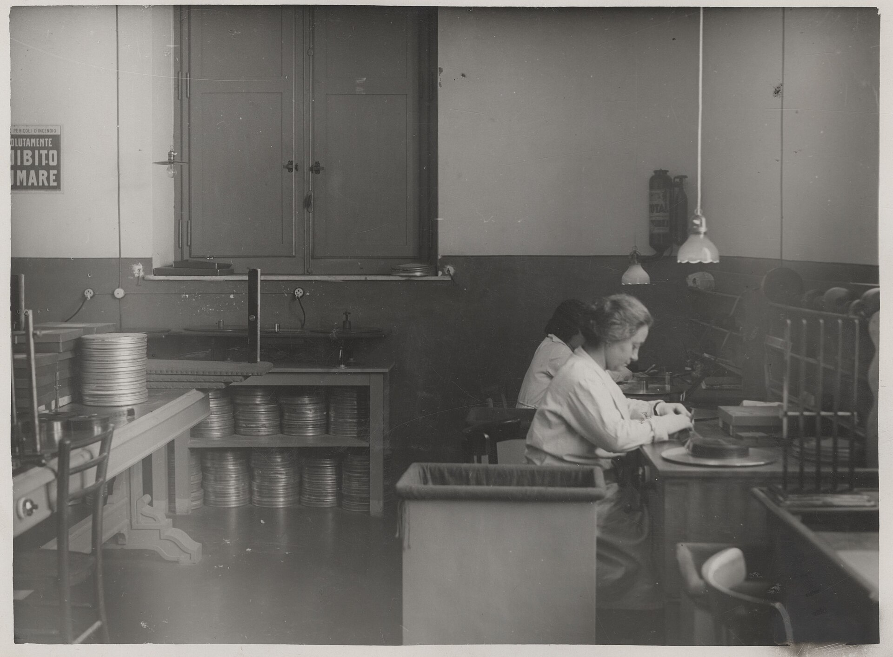
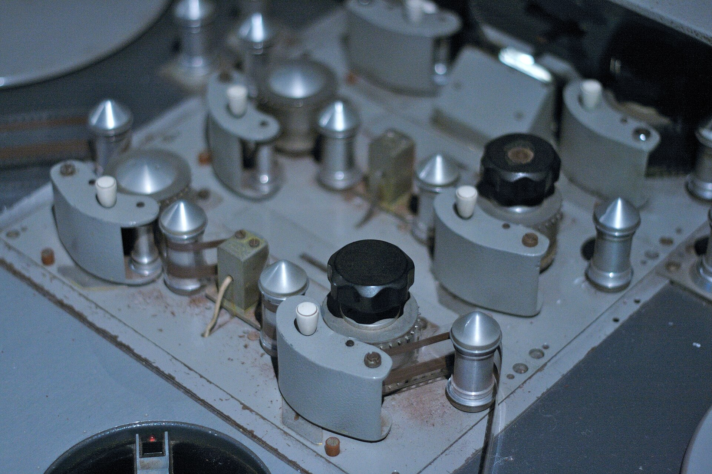
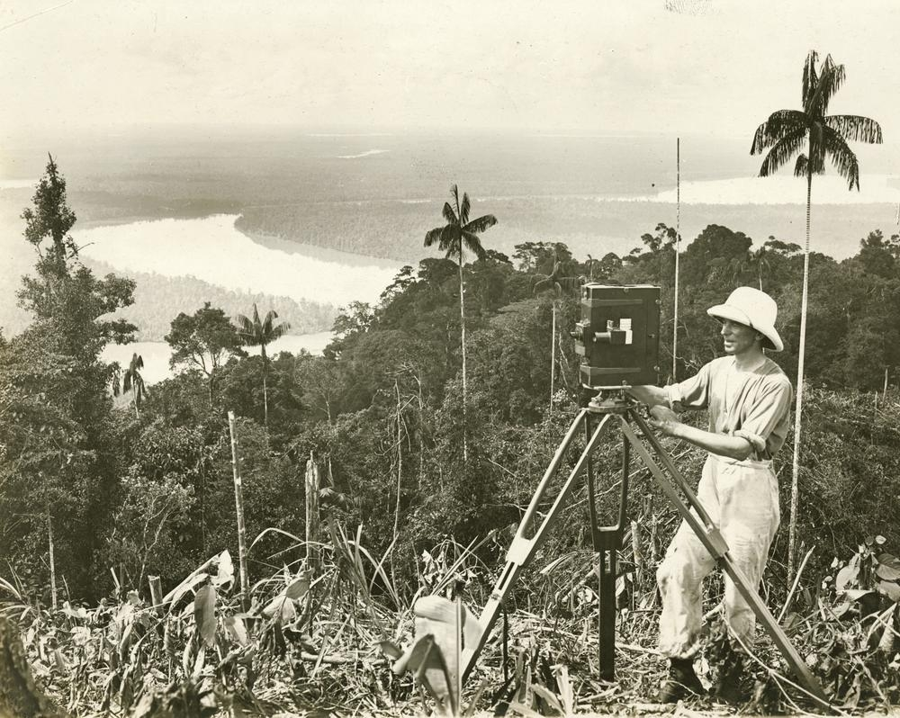
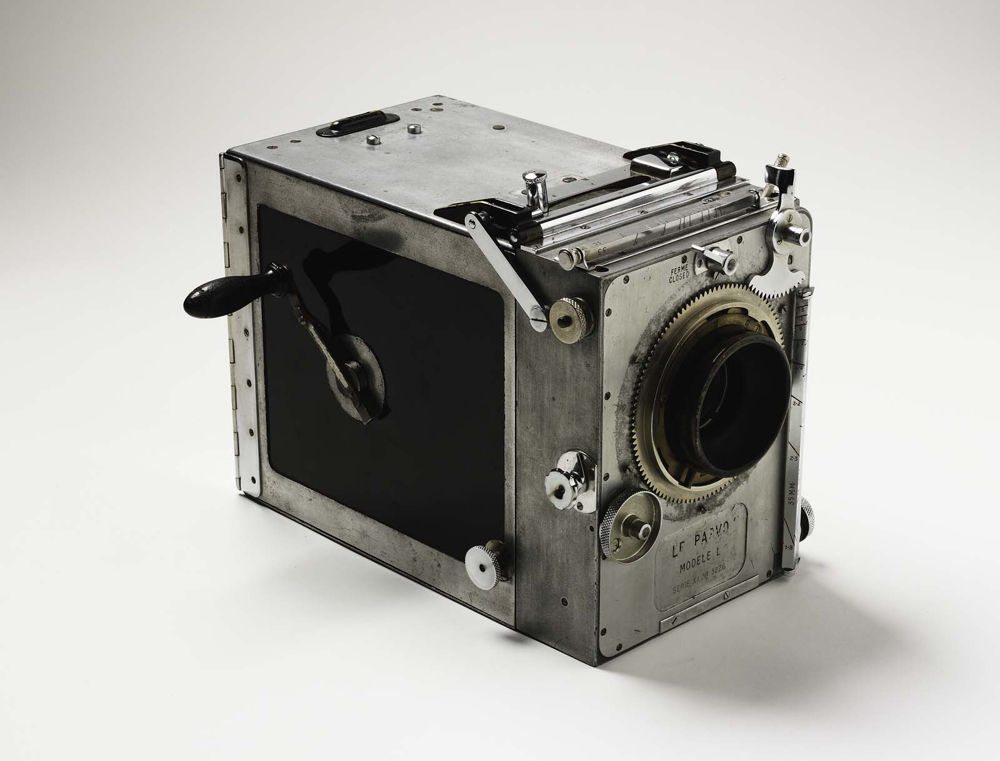

2025

Алексей. Монтирую рекламу, клипы и вертикальные ролики, которые досматривают до конца.
Обсудить ролик


До минуты, субтитры и звук включены
Единый стиль для всей серии
Две версии под разные площадки
С цветокоррекцией и музыкой
Монтаж, цвет, эффекты
Считаем по отснятому материалу
Сначала вы присылаете материал и говорите, что ролик должен сделать, а я отвечаю, сколько это стоит.
Потом вы смотрите черновик и пишете правки прямо по таймкодам.
В конце получаете файлы под все нужные площадки и исходник проекта.